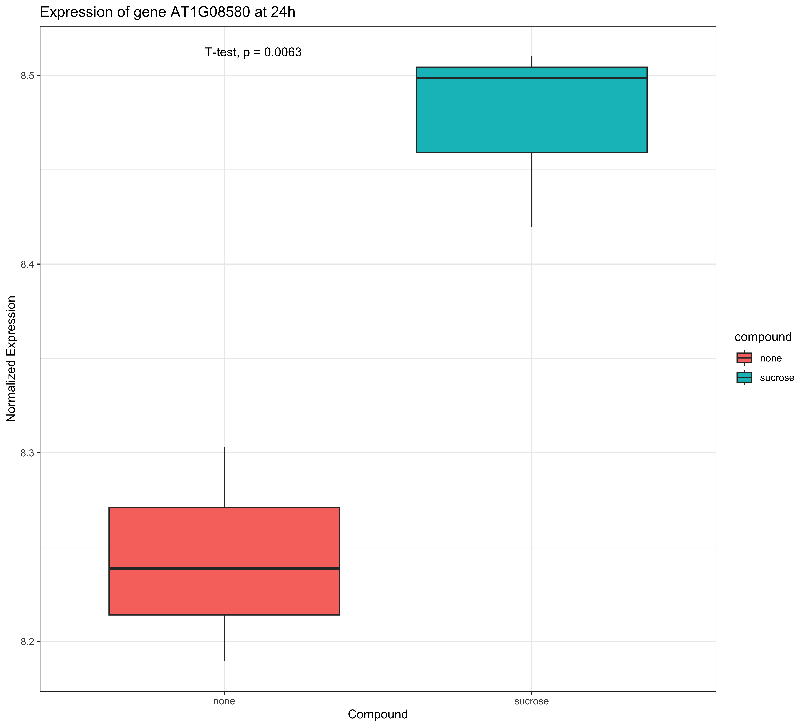
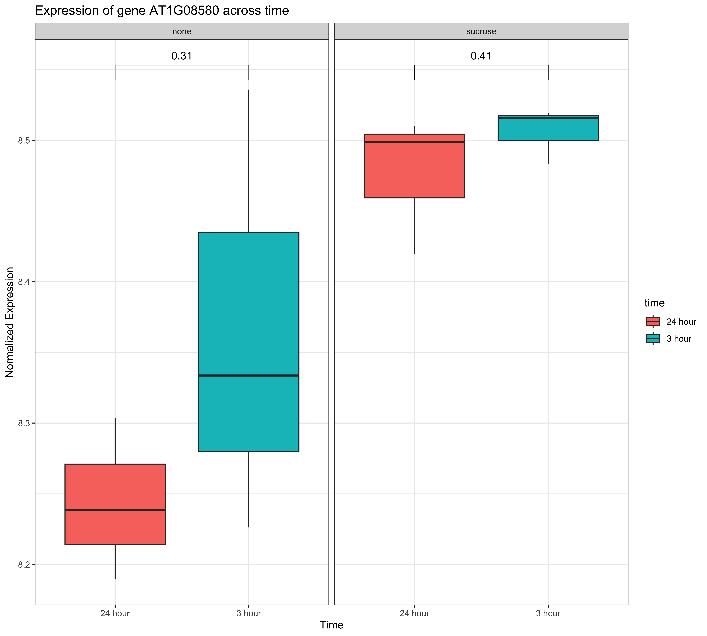

Block 4
Recap of Block 3
- Faceting: We learned how to create subplots to compare different subsets of data using
facet_wrap()andfacet_grid().
- Themes: We explored customizing the appearance of plots using built-in themes like
theme_minimal()and by modifying individual theme elements.
- Colors: We discussed the importance of color selection, explored
RColorBrewerandviridispalettes, and learned to specify colors manually.
Recap of Block 3
- Saving Plots: We covered saving plots for publication in various formats (PNG, PDF, TIFF) with specific dimensions and resolutions using
ggsave().
- Stylistic Elements: We fine-tuned stylistic elements like fonts and line weights using
theme().
- Interactive Plots: We learned to create interactive plots using
ggplotly()from theplotlypackage.
Statistical Annotations and Summaries
What is a Confidence Interval?
A confidence interval (CI) is a range of values that’s likely to include a population value with a certain degree of confidence.
- It’s a measure of the uncertainty around an estimate.
- A 95% CI means that if you were to take 100 different samples and compute a 95% CI for each sample, then approximately 95 of the 100 confidence intervals will contain the true mean value.
When to include it? When you want to show the uncertainty of a statistical estimate, such as a mean or a regression line.
Adding Statistical Summaries
ggplot2 makes it easy to add statistical summaries to your plots.
geom_smooth(): Adds a smoothed conditional mean, like a regression line. You can specify the method ("lm","glm","gam","loess").- Confidence Intervals:
geom_smooth()also displays a confidence interval around the smooth.
Example: geom_smooth()
Biological Question: Is there a correlation between the log-fold changes at 3h and 24h after sucrose treatment?

What is a Correlation Coefficient?
A correlation coefficient is a statistical measure of the strength and direction of a linear relationship between two variables.
- It ranges from -1 to 1.
- 1: Perfect positive correlation
- -1: Perfect negative correlation
- 0: No correlation
When to include it? When you want to quantify the linear relationship between two numeric variables.
The ggpubr Package
The ggpubr package provides functions to make ggplot2 plots more publication-ready. It simplifies the process of:
- Adding p-values and significance levels to plots.
- Adding correlation coefficients.
- Customizing plots with a cleaner theme.
- Arranging multiple plots.
Annotating Plots with Statistics
For more advanced statistical annotations, we can use the ggpubr package.
stat_cor(): Adds correlation coefficients and p-values.stat_compare_means(): Adds p-values from statistical tests (t-test, ANOVA, etc.).
Example: stat_cor()
Biological Question: How strong is the correlation between the log-fold changes at 3h and 24h?
Example: stat_compare_means()
Biological Question: Is there a significant difference in the expression of a specific gene between the “none” and “sucrose” conditions at 24h?
sig_gene_24h <- data$diff[
data$diff$sucrose_24h_pval < 0.05 &
abs(data$diff$sucrose_24h_lfc) > 1,
][1, "Gene_ID"]
plot_data <- data.frame(
expression = as.numeric(data$counts[sig_gene_24h, ]),
compound = data$anno$compound,
time = data$anno$time
) %>%
dplyr::filter(time == "24 hour")
ggplot(
plot_data,
aes(
x = compound,
y = expression,
fill = compound
)
) +
geom_boxplot() +
stat_compare_means(method = "t.test") +
labs(
title = paste("Expression of gene", sig_gene_24h, "at 24h"),
x = "Compound",
y = "Normalized Expression"
) +
theme_bw()
Comparing Multiple Groups
Biological Question: Is there a significant difference in the expression of a gene between the different time points for the sucrose treatment?
# Prepare data for comparing multiple groups
sig_gene <- data$diff[
data$diff$sucrose_24h_pval < 0.05 &
abs(data$diff$sucrose_24h_lfc) > 1,
][1, "Gene_ID"]
plot_data_multi <- data.frame(
expression = as.numeric(data$counts[sig_gene, ]),
compound = data$anno$compound,
time = data$anno$time
)
# Perform pairwise comparisons
my_comparisons <- list(c("3 hour", "24 hour"))
ggplot(
plot_data_multi,
aes(
x = time,
y = expression,
fill = time
)
) +
geom_boxplot() +
facet_wrap(~compound) +
stat_compare_means(
comparisons = my_comparisons,
method = "t.test"
) +
labs(
title = paste("Expression of gene", sig_gene, "across time"),
x = "Time",
y = "Normalized Expression"
) +
theme_bw()
Let’s Practice!
Now, let’s apply these concepts in Exercise.
Publication ready figures with R